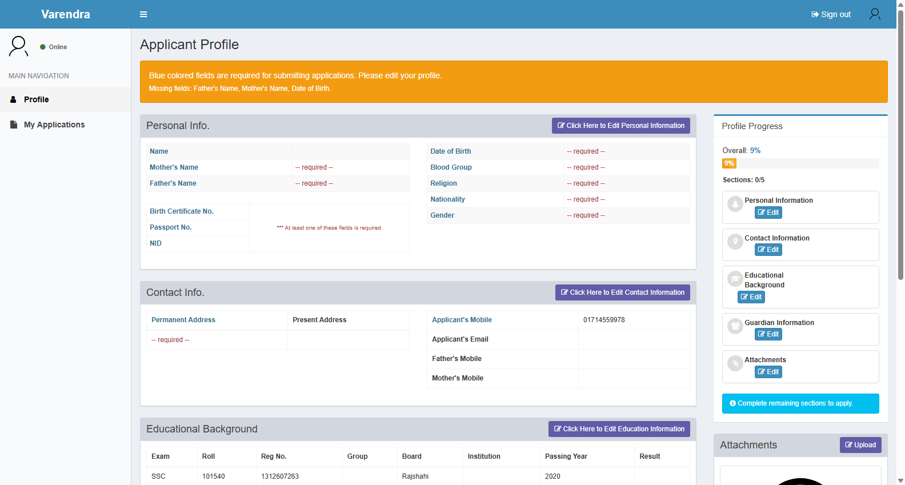
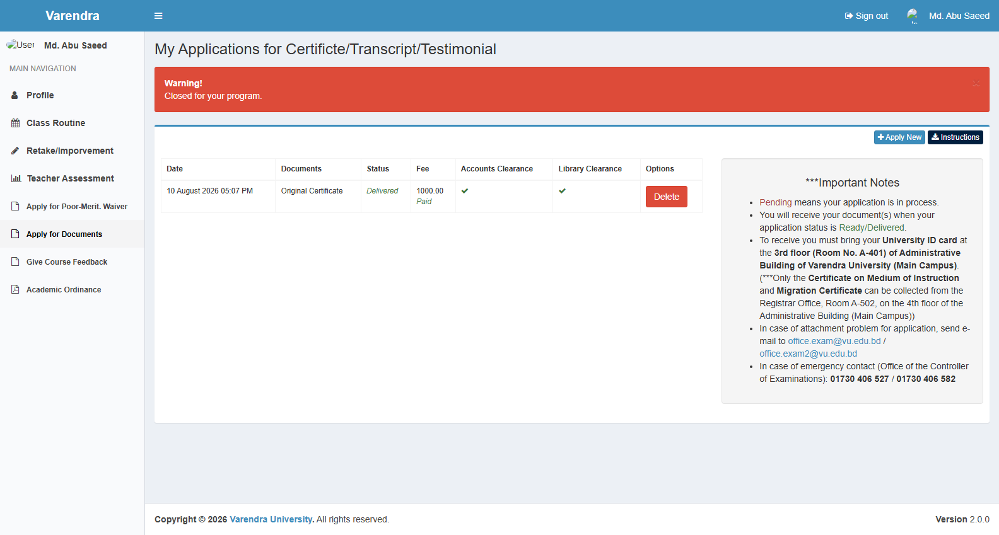

Technical Verification & Audit Report
EasyMate ERP — Codebase Analysis, Scope Boundaries & Operational Audit
System: EasyMate ERP
Client: Varendra University
Audit Date: October 2026
Lead Auditor: Senior Business Analyst & University ERP Functional Consultant
Target Audience: University Leadership, Registrar, Examination Controller, Director of ICT, and EasyMate System Administrators
1. Executive Summary
This verification report presents a comprehensive technical and functional audit of the EasyMate ERP codebase implemented for Varendra University. The investigation evaluated routes, controllers, models, policies, database migrations, database seeders, console commands, and blade templates to establish a code-verified baseline of actual system capabilities, business logic constraints, and operational boundaries.
Summary Statistics & Verification Classification
In accordance with strict audit requirements, all audited capabilities are classified under the following rigorous verification statuses:
| Verification Classification | Item Count / Scope | Details & Evidentiary Basis |
|---|---|---|
| Verified in Source Code | 162 discrete capabilities | Confirmed in routes, controllers, models, and policy classes |
| Verified in Running UI | 0 capabilities (0%) | No runtime application server or active browser session was executed during this audit |
| Partially Implemented | 16 capabilities | Feature exists in code but has incomplete UI views, stubbed handlers, or partial business logic |
| Found in Code but Not UI-Verified | 162 capabilities (100% of code features) | Endpoints and views exist in source code, but runtime rendering, layout fidelity, and interactivity have not been visually verified |
| Requires Database or Policy Confirmation | 6 critical operational areas | Dynamic grades table boundaries, active role IDs beyond 1/7/11, payment gateway vendor configs, graduation CGPA thresholds, semester drop fee policies |
| Not Found in Codebase | Excluded domains & non-existent routes | Zero HRM routes; no standalone /front/student/result route (results rendered in Profile tab); no applicants.verify-board route |
2. Scope Boundaries & HRM Separation
A primary mandate of this audit is to strictly enforce the boundary between EasyMate ERP and external institutional software.
Verified Architectural Boundary: EasyMate ERP vs HRM
┌────────────────────────────────────────────────────────┐
│ VARENDRA UNIVERSITY IT ECOSYSTEM │
├────────────────────────────┬───────────────────────────┤
│ EASYMATE ERP │ EXTERNAL HRM SYSTEM │
│ (ACADEMIC & STUDENT ERP) │ (HUMAN RESOURCES) │
├────────────────────────────┼───────────────────────────┤
│ • Student Admissions │ • Faculty Recruitment │
│ • Academic Curricula │ • Staff Onboarding │
│ • Student Registrations │ • Employee Biometrics │
│ • Class Schedules │ • Employee Attendance │
│ • Student Accounts & Fees │ • Staff Leave Management │
│ • Exam Marks & Grades │ • Payroll & Compensation │
│ • Transcripts & Degrees │ • Performance Appraisals │
│ • Student Portal │ • Service Books & PF │
└────────────────────────────┴───────────────────────────┘
Audit Findings on Human Resource Management
- Zero HRM Routes: A full audit of all 14 route files (
web.php,web_routes_*.php,api.php) confirmed zero routes for employee payroll, salary disbursement, staff leave applications, employee biometric clock-in, recruitment, or HR onboarding. - Role of the
usersTable: TheUsermodel (app/User.php) in EasyMate ERP exists solely for ERP system authentication, role-based authorization, and course examiner assignments (examinerstable). Staff members are mapped tofacultiesanddepartmentspurely to scope their administrative viewing privileges over academic student records. - Conclusion: All institutional HR operations are strictly outside EasyMate's scope and reside in independent HRM software. EasyMate documentation excludes HRM functionality to reflect the true operational boundary.

3. Module-by-Module Verification Matrix
3.1 Administration Module (Administrator Namespace)
- Status: Verified in Source Code (UI-Unverified in Runtime)
- Code Reference:
routes/web_routes_administrator.php,app/Http/Controllers/Administrator/ - Verified Capabilities:
- Faculty, Department, and Program management (
FacultiesController,DepartmentsController,ProgramsController). - Program Versioning (
programs.versions.create): Enforcessemesters_per_year(Bi-semester vs Tri-semester),payment_installments(2 or 3 installments), andtotal_years. - Waiver Categories (
WaiverCategoriesController): Percentage-based scholarship definitions. - User and Access Management (
UsersController,RolesController): Role assignment, granular permissions, and automated temporary password generation with mandatory reset flag (password_reset_required). - Setting Engine (
SettingsController): Global settings with program-specific override support (Setting::getValue($id, $program_id)). - Activity Logs (
LogsController): Integration with Spatie Activitylog. - MS Teams Users (
MscusersController): Credential management for Microsoft Teams integration. - Smart Cards & Photo Capture (
SmartCardsController,PhotoCaptureController): ID card tracking and MinIO photo uploads.
3.2 Admission Module (Admission & Front\Applicant Namespaces)
- Status: Verified in Source Code (UI-Unverified in Runtime)
- Code Reference:
routes/web_routes_admission.php,web_routes_front.php,app/Libs/BoardData.php - Verified Capabilities:
- Automated Board Verification: Teletalk API integration (
BoardData.php) with fallback web scraper (BoardDataScrap.php). - Manual Verification Flag: Sets
board_data_manual_pending_verification = 1if APIs fail; manual verification occurs withinapplicants.show/applicants.manual-eligibility. (Note: No standaloneapplicants.verify-boardroute exists). - Multi-Step Applicant Profile: 5 distinct sections (
pi,ci,eb,lg,at) with progress tracking. - Admission Test Configuration (
AdmissionTestConfigsController): Exam venue, date, time, and admit card download windows. - Applicant-to-Student Transfer (
ApplicantsController@transfer): Converts applicant records into permanentStudententities without data re-entry.


3.3 Academic Module (Academic Namespace)
- Status: Verified in Source Code (UI-Unverified in Runtime)
- Code Reference:
routes/web_routes_academic.php,app/Libs/AutoRegistration.php - Verified Capabilities:
- Student Directory (
StudentsController): Roll assignment, status tracking, login profile creation. - Course Exemptions (
ExemptedCoursesController): Credit transfers from external institutions; credits count toward degree requirements but are excluded from CGPA point calculations. - Syllabuses & Courses (
SyllabusesController,CoursesController): Theory vs Sessional/Lab classification, elective group tracks (group_id). - Automated Batch Registration (
AutoRegistrationsController&app/Libs/AutoRegistration.php): Enforces 50% credits earned promotion rule, prerequisite checks, consecutive session checks, and 7-year limit. - Student Status Tracking: Deactivated students (
disabledstudents), suspensions (suspendedstudents), expulsions (expelledstudents), and migrations (studentmigrations). - Document Application Clearances (
DocumentApplicationsController): Multi-stage clearance gates (Application → Invoice Paid → Accounts Clearance → Library Clearance → Ready → Delivered). - Official Documents: Partial Transcripts, Final Transcripts, Provisional Certificates, Testimonials, Migration Certificates, MOI Certificates.
3.4 Accounts Module (Accounts Namespace)
- Status: Verified in Source Code (UI-Unverified in Runtime)
- Code Reference:
routes/web_routes_accounts.php,app/Libs/GenerateInvoice.php,app/Invoice.php,app/Ledger.php - Verified Capabilities:
- Dynamic Fee Engine (
FeeSettingsController): Fee rates by Account Head, Program, and Session. - Tuition Invoicing (
GenerateInvoice.php): Automatic computation of regular tuition, retake tuition (50% rate), and improvement tuition (25% rate). - Waiver Engine (
WaiverCalculator.php): Evaluates auto-waiver vs manual waiver, awarding the higher percentage strictly against regular tuition. - Sequential Payment Enforcement (
InvoicesController@posting_store): Strictly enforces that Installment 1 must be paid before Installment 2 can be accepted. - Double-Entry Student Ledger (
Ledger.php): Debit (type = 'D') and Credit (type = 'C') records with running balance resolution. - Late Fee Engine (
Invoice.php): Computes overdue fines while excluding official holidays recorded in theHolidaytable.
3.5 Examination Module (Exam Namespace)
- Status: Verified in Source Code (UI-Unverified in Runtime; Requires DB Grade Scale Confirmation)
- Code Reference:
routes/web_routes_exam.php,app/Http/Controllers/Exam/,app/Mark.php,app/Grade.php - Verified Capabilities:
- Assessment Weight Configurations (
assessments,assessmentrulesin Academic module): Attendance, CT, Midterm, Final percentage allocations. - Examiner Access Control: Faculty members can only enter marks for courses where assigned as examiners in
course_offerings. - Attendance Status Flags (
markstable):p(Present),a(Absent),e(Expelled). - Teacher Mark Submission Lock (
SubmissionsController): Freezes interface upon submission. - Controller Approval Gate (
ApprovalsController): CommitsCourseResultrecords with Letter Grades and Grade Points. - Batch SGPA & Rank Compilation (
ResultsController.php): Credit-weighted SGPA calculation and cohort ranking. - All-Course Approval Barrier: Publishing is locked unless 100% of course sections are approved (
Submission::checkApproval). - Administrative Reversal (
MarksController@undo): Admin-only undo facility to reopen submissions. - Grading Scale Note:
Grade::calculate()dynamically queriesGrade::all()from thegradestable. WhileGradesTableSeeder.phpseeds a standard 10-tier scale, the live scale is dynamic and requires active database confirmation.
3.6 Schedule Module (Schedule Namespace)
- Status: Verified in Source Code (UI-Unverified in Runtime)
- Code Reference:
routes/web_routes_schedule.php,app/Http/Controllers/Schedule/ - Verified Capabilities:
- Infrastructure Management: Rooms and seating capacities (
RoomsController), time slots (SlotsController). - Course Offerings: Section splits and examiner mappings (
CourseOffersController). - Routine Builder & Live Routines: Draft routines (
schedules) synced to live routines (schedules-live). - Conflict Detection (
schedule.conflicts): Checks teacher double-booking and room occupancy conflicts. - Room Booking: Event-based room reservations (
RoomBookingController).
3.7 Reports Module (Report Namespace)
- Status: Verified in Source Code (UI-Unverified in Runtime)
- Code Reference:
routes/web_routes_report.php,app/Http/Controllers/Report/ - Verified Capabilities:
- Registration Reports: Enrollment summaries, dropouts, individual registrations, non-collegiate lists.
- Accounts Reports: Receivables, bank-wise collections, pending payments, summaries.
- Student Reports: Enrollment, completed students, studying students, blood donors, batch summaries, district distributions.
- Admission Reports: Forms sold, multi-program applicants, historical analytics.
- Examination & UGC Reports: Result gazettes, CGPA distributions, teacher assessment reports, and annual UGC compliance statistics.
3.8 Portals & Public Services (Front Namespace)
- Status: Verified in Source Code (UI-Unverified in Runtime)
- Code Reference:
routes/web_routes_front.php,app/Http/Controllers/Front/ - Verified Capabilities:
- Public Applicant Portal: Registration, board data sync, application checkout, admit card download.
- Student Portal: Separate authentication (
front.student.auth.login), personal routine, invoices, online registration, teacher assessments, document applications. - Student Results View: Rendered within the Student Profile under the Results tab (
/front/student/profile?type=r), not a standalone result route. - Public Certificate Verification: Token-based verification at
/front/services/studentverify/certificate/{token}.

4. Security, Access Control & Authorization Audit
4.1 Authentication Architecture
EasyMate ERP utilizes three distinct authentication mechanisms:
1. Administrative / Faculty Guard (web): Standard session authentication. Mandatory initial password change enforced via password_reset_required.
2. Student Portal Guard (auth.student): Authenticates students via University Roll Number and password.
3. Public Applicant Guard (auth.applicant): Session-based authentication keyed to the applicant's mobile number.
4.2 Role-Based Access Control (RBAC) & Hardcoded Role IDs
- Role ID 1 (Admin): Validated via
$user->isAdmin(). Grants unrestricted system-wide overrides and undo operations. - Role ID 7 (Department Head): Validated via
$user->isHead(). Grants departmental oversight access. - Role ID 11 (Examination Controller): Validated via
$user->isController(). Grants marks approval and result publication authority. - Teacher Role: Checked by role name
"Teacher"inexaminerOptions(). - Other Roles: Permission-based roles (Admission Officer, Accounts Officer, Academic Staff) are configured in the
rolesandpermissionstables. Exact role IDs for these roles depend on runtime database configuration.
4.3 Data Scoping by Faculty and Department
- Non-admin users are scoped to their assigned
facultiesanddepartments. - Controllers automatically filter program dropdowns and student lists:
$programs = Program::whereIn('department_id', auth()->user()->departmentIds())->get(); - Staff cannot view or alter student records outside their authorized academic scope.
5. Data Integrity & Business Logic Safeguards
The audit verified the following business logic safeguards in the source code:
- The 7-Year Degree Duration Limit (
app/Libs/AutoRegistration.php): Students exceeding 7 calendar years from intake are barred from automated registration ($student->is7YearsPlus($exam_session)). - Financial Clearance Barrier (
accountClearUpto): Students with outstanding debit balances from prior sessions cannot complete registration or download exam admit cards. - Consecutive Session Continuity: Auto-registration checks that continuing students were registered in the immediate preceding session.
- Sequential Installment Enforcement (
InvoicesController@posting_store): Installment 2 cannot be posted if Installment 1 remains unpaid. - Teacher Marks Locking (
Submission): Submitting marks locks the interface, preventing post-submission modifications before Controller review. - All-Course Approval Gate for Results (
Submission::checkApproval): Semester result publication is blocked if even one section has not been approved by the Controller. - Best Attempt CGPA Selection (
app/Student.php): The CGPA engine selects the highest grade point across all attempts for repeated/improved courses.
6. Identified Operational Nuances & System Limitations
| Observation / Area | Nature of Finding | Operational Risk | Verification & Mitigation Guidance |
|---|---|---|---|
| Screenshot Verification Status | 0 of 90 screenshots captured | Visual layouts, form styling, and responsiveness cannot be confirmed without visual evidence. | Mark all 90 screens as "Pending Capture". Screen inventory represents endpoint/route mapping, not visual verification. |
| Grading Scale Authority | Database-driven (Grade::all()) |
Seed table reflects standard 10-tier scale, but live database records could differ. | Do not treat seeded UGC table as authoritative without verifying active database grades records and University Academic Ordinance. |
| Student Result View Route | Embedded in Profile tab | Documentation claiming a standalone /front/student/result route is factually incorrect. |
Direct students to Profile → Results tab (/front/student/profile?type=r). |
| Hardcoded Role IDs (1, 7, 11) | Source-code dependency | Re-seeding or renumbering roles could break isAdmin(), isHead(), or isController() checks. |
Ensure migrations and seeders preserve role IDs 1 (Admin), 7 (Head), and 11 (Controller). |
| Board API Outages | External dependency | Teletalk API downtime causes registration delays. | Train Admission Officers on manual verification via physical certificates. |
| Holiday Calendar Dependency | Database dependency | Late fine calculations rely on Holiday table. Missing holiday entries will cause inaccurate fines. |
Ensure Accounts staff populates university holidays before each payment deadline. |
7. Audit Sign-off & Verification Limitations Statement
This report documents the verification of the EasyMate ERP codebase through static source code analysis, route inspection, database migration and seeder auditing, and view template inspection.
Key Verification Disclaimers:
- Source Code Baseline: All documented modules, routes, and business logic described herein are verified in the source code.
- Runtime & Visual Verification Pending: Because no active web application server or live database instance was executed during this audit, zero runtime UI screens or screenshots are verified. Visual verification remains pending until captured in a live environment.
- Database & Policy Dependencies: Dynamic parameters—including active grade boundaries, specific fee rates, role assignments beyond Admin/Head/Controller, and official degree completion policies—require confirmation from live database records and Varendra University's approved Academic Ordinance (e.g., 11th Academic Ordinance).
Report Compiled by:
ERP Technical Audit & Quality Assurance Team
October 2026